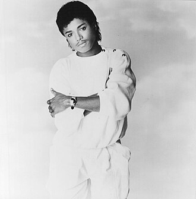

Randy Jackson
Steven Randall Jackson is an American singer and songwriter. He is the ninth child and youngest son in the Jackson family. Randy is the youngest Jackson brother and the second-youngest Jackson sibling before his sister Janet. Randy is a former member of his family band the Jacksons, which he joined after his brother Jermaine left the group. He was nominated for the Grammy Award for Best R&B Performance by a Duo or Group with Vocal for his work on the 1980 studio album Triumph at the 23rd Annual Grammy Awards.
Complete Discography & Tracklists (2)